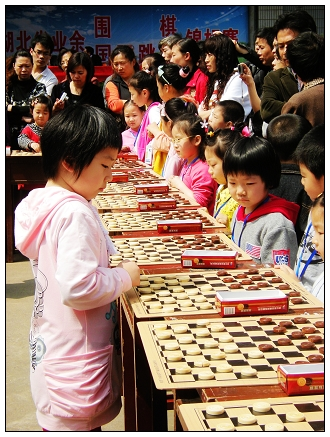

湖北国跳小棋手以一对十车轮战
#1 湖北国跳小棋手以一对十车轮战 作者：孤竹 发表时间：2010-5-13 17:04:51

《楚天金报》 http://ctjb.cnhubei.com/HTML/ctjb/20100510/ctjb24.html
小棋手以一对十车轮战
在武汉市财贸学校操场上，参加本次锦标赛的40名成绩较好的小棋手围成一圈，与湖北集训队的少年棋手进行了一场别开生面的车轮战。
8岁的戚镡月、8岁半的韩可晴、8岁的詹力洋、10岁的张开被围在中间，四名少年棋手的对手，是本次比赛的佼佼者，他们是男子公开组的前16名棋手和其他三个组别的前8名棋手。1对10的车轮战，四个小家伙能够应付得来吗？他们可不是一般小孩，8岁的戚镡月在前不久的全国公开赛中，夺得女子冠军；8岁半的韩可晴在今年的全国个人锦标赛中夺得女子超快棋的第二名，全国少儿赛冠军；8岁半的詹力洋在去年全国比赛中夺冠；10岁的张开也曾与队友夺得过全国团体冠军。
40名小棋手车轮战4位省集训队队员，众多家长都想看看这4位全国冠军有什么三头六臂，围在旁边看个仔细。比赛中，湖北集训队队员并没有一丝的慌乱，每盘棋都不落下风，有时他们还催促参加多面打的小棋手快一点。年龄最小的戚镡月最吃亏，她只是比桌子略高一点，在10盘棋之间转动，胳膊有点酸，不过场面上并不差。经过1个小时的切磋，4位棋手与40位棋手完成了交流，4位棋手取得了34胜的战绩。
省棋牌运动管理中心副主任谭东旗表示，4位不到10岁的小棋手与其他40名棋手进行车轮战，这在以前没有先例，堪称创举，将有力地推动国际跳棋的发展。（记者黄鹏程）
［此帖子已被 孤竹 在 2010-5-13 17:06:34 编辑过］